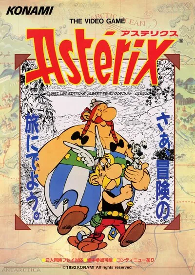

FBA (FinalBurn Alpha)
Asterix
- Año: 1992
- Desarrollador: Konami
- Género: Lucha / 2.5D
- Jugadores: 2 jugadores
Astérix es un videojuego de tipo beat 'em up publicado por Konami en 1992 para plataforma arcade. Está basado en el personaje de historietas homónimo, Astérix, y su diseño general es similar al de dicha historieta, incluyendo varios gags visuales propios de la misma.2
El jugador debe elegir a Astérix o a Obélix como personaje controlable, y recorre niveles enfrentando a diversos legionarios romanos. Dos bonus recurrentes son la aparición de Falbala, que besa al jugador y aumenta sus puntos de vida, y la de Ideafix que ofrece una cantimplora de poción mágica (en el caso de Astérix) o un jabalí asado (en el caso de Obélix), que permite destruir rápidamente a todos los enemigos presentes en dicho momento.
El primer escenario tiene lugar en los alrededores de la aldea gala, y el jefe de nivel lo constituye un gupo de legionarios en formación de tortuga. Los restantes niveles se basan libremente en diversas historias publicadas de Astérix, como Astérix y Cleopatra, Astérix en Hispania, Astérix en la India, y un último nivel (con la portada de Los laureles del César) en donde enfrentan a varios jefes de nivel en el circo romano. Sin embargo, tales niveles no reproducen las historias en cuestión, sino que desarrollan un juego Beat 'em up habitual en un contexto propio de dichas historias.
Los niveles de bonus incluyen dos carreras en cuadrigas y dos recorridas por el barco de los piratas.
De vez en cuando aparece una guapa rubia llamada Falbalá con una cesta. Si Astérix u Obélix se acercan a ella, les da un beso que les recupera algo de salud y deja paralizados de vergüenza durante un rato a los legionarios que haya en pantalla. La salud también se recupera cogiendo los montones de manzanas rojas repartidos por las fases.
Astérix tiene ocho fases distintas, llamadas «actos», todas con un jefe al final. A partir del segundo, cada acto se basa en un álbum distinto de Astérix, con sus lugares, objetos y enemigos característicos, como piratas, ladrones y guardias indios.
Tras algunas fases hay niveles de bonificación: una carrera de cuadrigas contrarreloj o romper barriles contrarreloj a bordo de un barco de vela. Las ocho fases del juego son: * Primer acto: la aldea * Acto 2: Astérix en Egipto * Acto 3: Astérix en Bretaña * Acto 4: Astérix y Falbalá * Acto 5: Astérix en Hispania * Acto 6: Astérix y la alfombra mágica * Acto 7: Astérix contra César
Controles
Dos botones.
| Panel | Juego |
|---|---|
 | Atacar (mantener pulsado: golpe más fuerte) |
 | Botón 2 (⚠️ confirmar) |
| + | Salto con ataque |
 | Moneda |
  | Empezar |
+  | Salir del juego |
El panel en FBA (FinalBurn Alpha)

Longplay

Partida completa de la recreativa (40 min), de AL82 Retrogaming Longplays: Asterix Longplay (Arcade) [QHD].